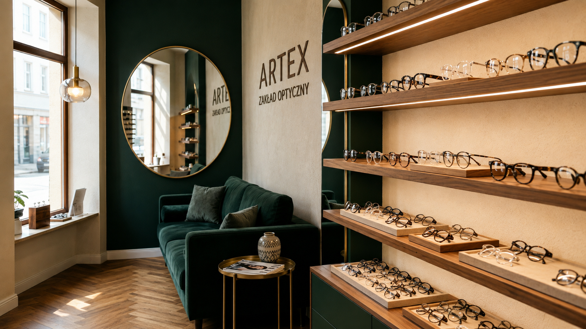
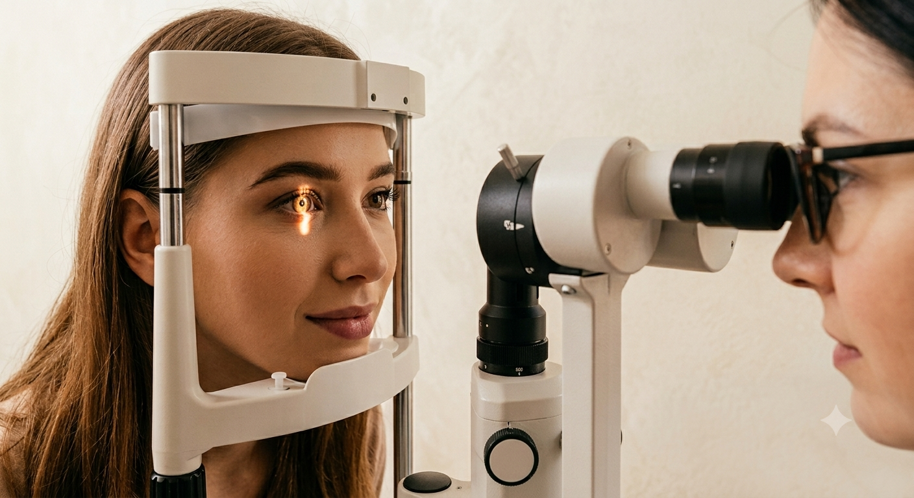
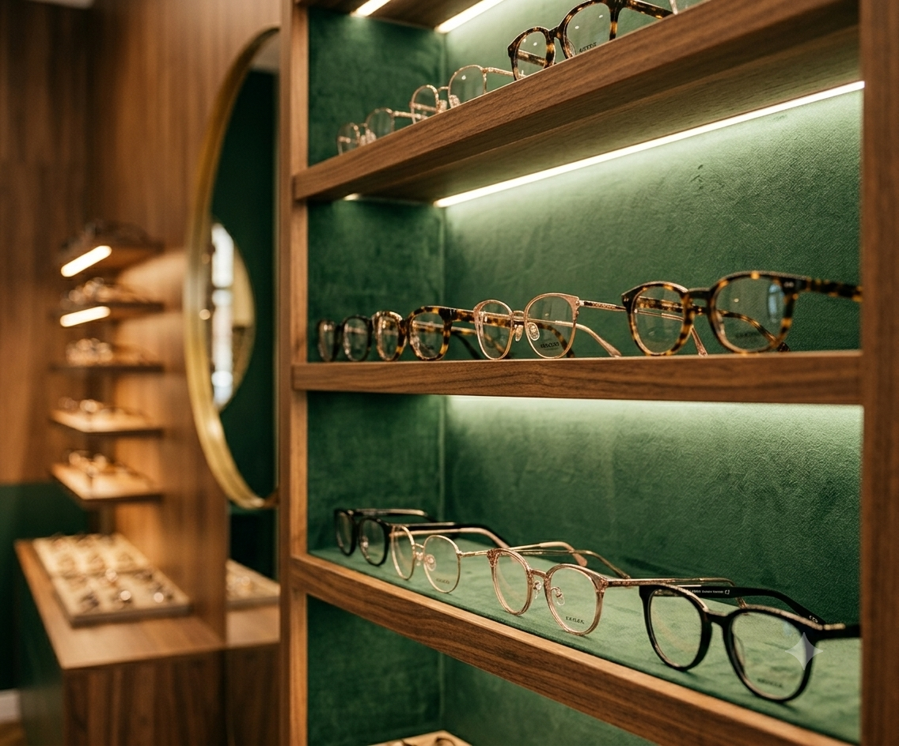

◉
Badanie wzroku
Dokładna ocena ostrości widzenia i dobór odpowiedniej korekcji.
Profesjonalne badanie wzroku, okulary korekcyjne, soczewki kontaktowe i serwis okularów. Od prostych, przystępnych opraw po kolekcje renomowanych marek.

Od pierwszego badania po dopasowanie i późniejszy serwis okularów.
Dokładna ocena ostrości widzenia i dobór odpowiedniej korekcji.
Soczewki i oprawy dopasowane do codziennych potrzeb, stylu i budżetu.
Pomoc w wyborze właściwego rodzaju oraz instruktaż użytkowania.
Regulacja, drobne naprawy i przywracanie komfortu noszenia.

Badanie jest punktem wyjścia do właściwego doboru korekcji. Zależy nam, aby klient rozumiał wynik i wiedział, jakie rozwiązanie będzie dla niego najlepsze.
Nie narzucamy jednego stylu ani poziomu cenowego. Pomagamy znaleźć oprawy, które dobrze wyglądają, dobrze leżą i pasują do założonego budżetu. W salonie dostępnych jest ponad 10 000 modeli opraw.
Praktyczne, wygodne i estetyczne modele do codziennego użytkowania.
Szeroki wybór fasonów, kolorów i kształtów dla osób szukających balansu.
Renomowane kolekcje dla klientów zwracających uwagę na detal i wzornictwo.
Materiały bezpieczne dla skóry: tytan, stainless steel, nickel free, powłoka z 24-karatowego złota, acetat, optyl.
Szukasz oprawy modowej? Zobacz kolekcje Eva Minge, Armani i Vogue →
Zanim zdecydujesz się na zakup, wypróbuj wirtualną przymierzalnię soczewek fotochromowych.
Zobacz soczewki Transitions →„Dobrze dobrane okulary powinny być nie tylko modne, ale też wygodne od rana do wieczora, dostosowane do codziennego stylu życia.”

„Bardzo profesjonalna obsługa od A do Z, bardzo duży wybór oprawek. Okulary przeciwsłoneczne korekcyjne zrobione w ciągu jednej godziny.”
Patryk„Przemiła obsługa. Profesjonalne podejście. Przystępne w okolicy ceny, co kusi najbardziej. Panie zawsze pomocne, cierpliwe. Okulary wykonane z największą dbałością o szczegóły. Polecam!”
Martyna Wielgus„Bardzo polecam ten punkt optyczny. Przykładem niech będzie fakt, iż dalej korzystam ze „starych” okularów progresywnych tak dobrze dobranych w tym punkcie, że nowo zrobione u konkurencji leżą (mimo że bardziej markowe i droższe). Dziękuję i pozdrawiam.”
Klient salonuAdres:
Grunwaldzka 2
33-200 Dąbrowa Tarnowska
Telefon:
14 642 33 05
Godziny otwarcia salonu:
Godziny badań wzroku:
Powyższe godziny badań to propozycja — prosimy zespół salonu o potwierdzenie lub podanie właściwych dni/godzin przed publikacją strony.
Na badanie wzroku prosimy o wcześniejsze umówienie się na konkretną godzinę telefonicznie pod numerem 14 642 33 05.
Zadzwoń teraz